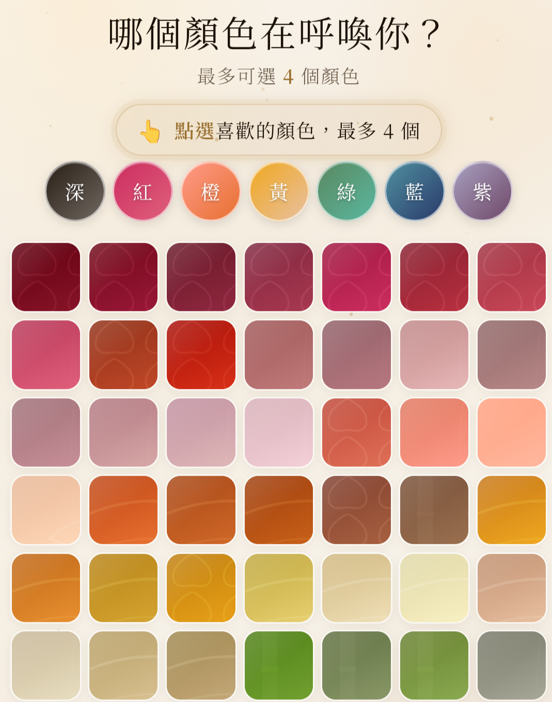
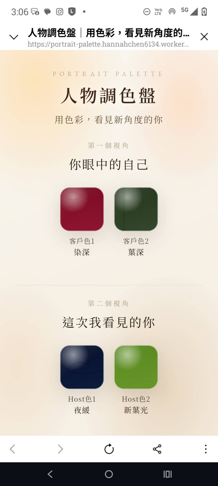

先聽你怎麼說
從你選下的顏色開始，循著你的語言與節奏慢慢聊。
ABOUT THE CREATOR
累積十多年設計與創作者合作經驗。現在，我用色彩與對談，陪你看見自己的另一個角度。

FROM DESIGN TO CONVERSATION
我用色彩、文字與對談，整理一個人的氣質與故事，讓原本就有的亮點被看見。
從水晶飾品訂製開始，長期接觸色彩、材質與每個人的不同選擇。
長期與身心靈老師、自由工作者、個人品牌、活動主辦人及社群主理人合作。
我習慣觀察一個人的語氣、溫度與故事，再透過美感與文字整理成容易理解、也能被記住的內容。
從選色與對談開始，整理人物金句與我看到的亮點，製作成可以收藏或分享的人物紀錄。


HOW I WORK WITH YOU
不是替你分析人格，而是把空間留給你的感受、經驗與說法。
從你選下的顏色開始，循著你的語言與節奏慢慢聊。
顏色不代表固定性格；同一個人，也可以同時擁有很多不同面向。
將這次對談裡重要的片段，整理成你可以保存或分享的色彩收藏。
WHAT I BELIEVE
我不想用顏色告訴你「你是誰」。我更想陪你看見：原來自己還可以有這個角度。
認識我之後，也來認識人物調色盤。
了解這項服務